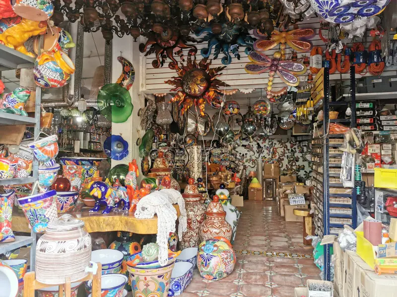

Av. Benito Juárez esq. con C. Peñuelas, Locales 1 al 25, Col. San Antonio, CP 51200, Valle de Bravo, Edomex. A 3 cuadras del zócalo, bajando hacia el lago
Fue construido por el gobierno del Estado de México para fomentar y difundir el trabajo de artesanos locales mazahuas, otomíes y matlazincas. Es el mercado más antiguo y famoso del Pueblo Mágico.
